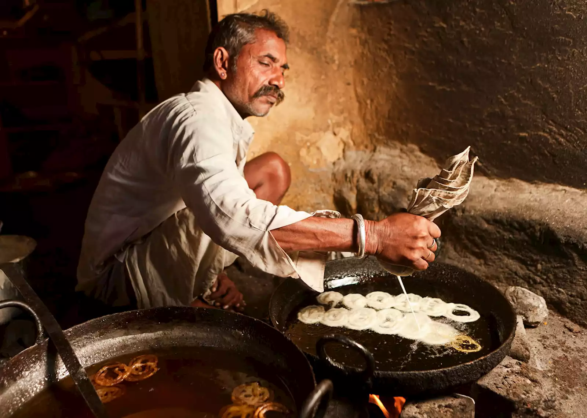
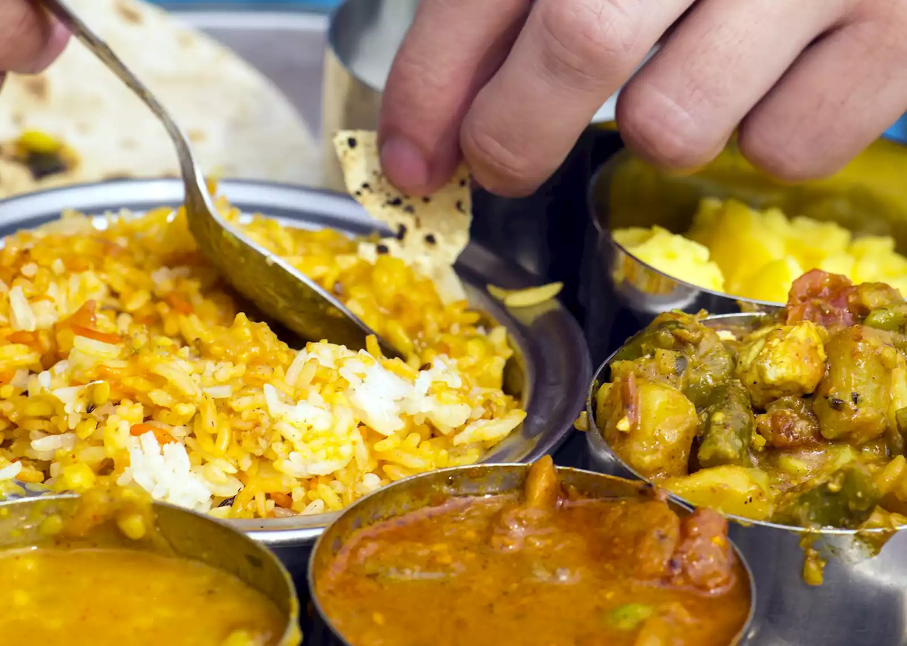
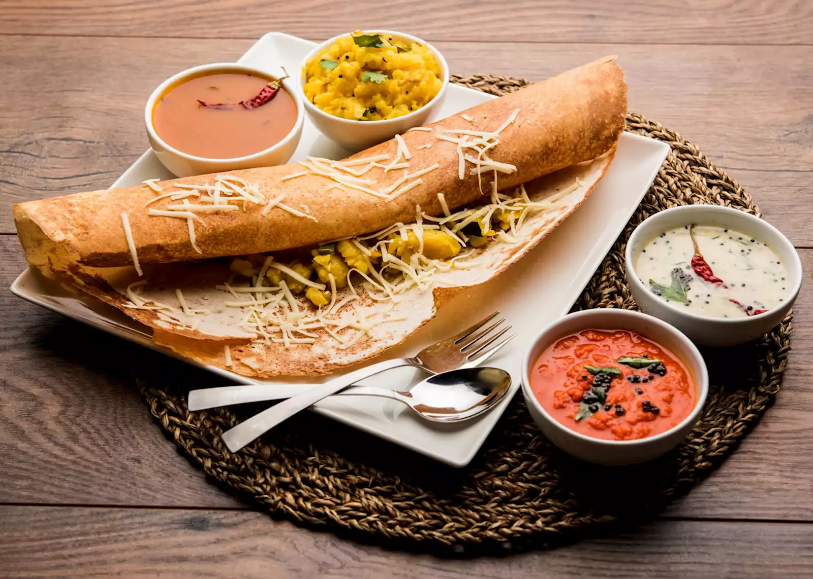
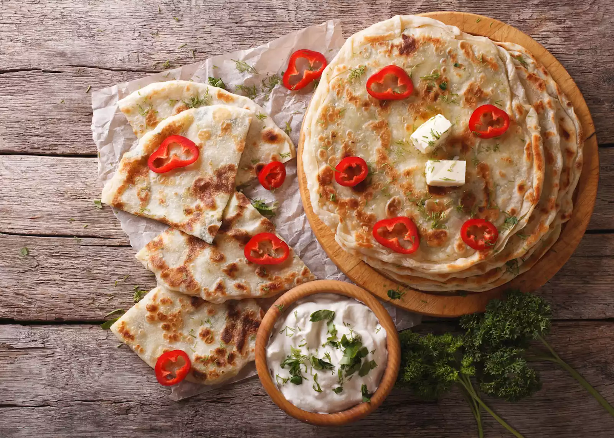
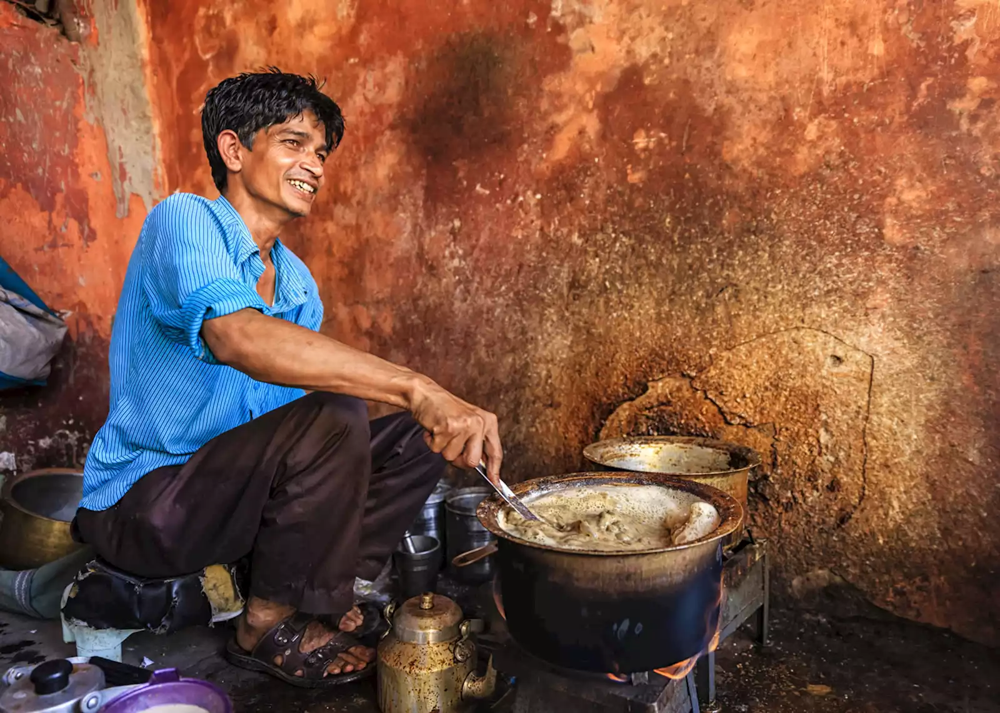

Food highlights of Us
street-food style
The best piece of information I can share is to take a street-food tour as soon as you arrive. With
the guidance of a local resident, you’ll be shown which signature dishes to look out for, how to eat
them and what delicate Western stomachs should avoid.Guides are always eager to show you a full
range of tastes so you can begin to pick out what you prefer. If you’re vegetarian or vegan ― well,
a large proportion of India is too, so there’s plenty to try.
On my first afternoon in Delhi I
found myself trawling Old Delhi’s labyrinthine streets, eating dish after dish. It’s belly-busting,
so don’t be tempted to eat beforehand. You can watch as jalebi (sweets made from fine flour) are
deep-fried in a swirl of oil right in front of you, and parathas (thin circles of bread) cook on
open-air hot plates.
Aloo chaat (crisp fried potatoes) are popular with Old Delhi residents, and are often served with a
range of homemade mango and lime chutneys. If you don’t handle spicy food well, you’ll be pleased to
hear that dishes are usually prepared mild, and additional condiments offered to those wanting a
hotter hit.
A multi-dish thali banquet___Cutlery Optional
Another way of trying a range of dishes is by ordering a thali. This traditional meal is a rainbow of
curries, dal, yoghurt and pickles served in small bowls, along with rice and bread. It’s all crammed
onto one large plate. The type of bread varies between regions, but is usually a flat, round,
freshly cooked roti.
Whether you’re in a fancy restaurant or a homestay, you’ll notice most people eat thali with their
hands (it’s customary to eat with just the right hand), using the bread to scoop up the juicier
bits.
I like to tackle the meal this way, but it’s usual to see people using cutlery too.
You’ll usually pick a meat, vegetable or fish option, but the exact dishes are usually a surprise —
though waiters are always happy to give you more detail. I particularly like garlic and mustard seed
pickle, a particularly pungent condiment that’s often sweetened with jaggery (cane sugar).
Dinner on a backwater houseboat in kerela

A core tenant of Indian cuisine is the use of fresh ingredients. If it’s not in season, or local to
the area, you won’t find it. This is one of the reasons why dishes vary across the country, from the
heavy, tamarind-rich curries in the north, to lighter coconut-based dishes in the south.
I’d argue that you can’t get fresher than dinner on a Keralan backwater houseboat, where the main
ingredient (usually a pomfret fish) has been caught off the back of the boat a few moments
earlier.
The rest of the ingredients will have been purchased from small waterside sellers while
the boat was docked.
Your freshly grilled fish will be traditionally served on a banana leaf, and surrounded by pickles,
rice and chapatis (a soft, whole-flour flatbread). This is often preceded with onion pakora (crispy
deep-fried onions in batter) and banana fry, which is actually plantain fried in a rice-flour batter
Dosa:a lighter breakfast alternative from south indian
Curries, pickles, dal and rice for breakfast can be quite a shock to many palates, but a gentle
introduction to an Indian-style breakfast is the dosa. These simple, crispy pancakes are made from
fermented chickpea flour and a bit of bicarbonate of soda and water. They’re often so large they
hang over the sides of the plate.
You can eat them as they are, with a bit of yoghurt, or add a filling, the most popular of which is
potato masala. These soft, roughly mashed potatoes are gently spiced with cumin, mustard seeds and
turmeric, a dish that’s not too overpowering to start the day with, I’ve found.
If you’re after
something more intense, there’s always a spicy mango or lime pickle nearby.
Where: Dosas are a South Indian dish, found on the menu in most hotels and homestays, although some
of the best are cooked up on the streets. Take a street-food tour of Mysore, in Karnataka state,
where the Mysore masala dosa has become quite an institution. You can sit and eat in Devaraja Market
square, watching the fruit and vegetable vendors flaunt their goods.
Traditional Indian home-cooking lessons
Traditional Indian home cooking often includes long lists of ingredients and uses techniques uncommon
outside the region. For me, North Indian bread is the best bread in the world, but I’ve never
managed it at home until I was taken into the kitchens of Deogarh Mahal, a small fort-turned-hotel
between Jaipur and Udaipur.
I was soon folding dough to make parathas, a flaky flatbread that, on paper, seems slightly
complicated.
But, once you’ve watched someone demonstrate, it’s (relatively) simple. You’ll
usually walk away with a few recipes in hand ― and, in my case, some tips on strawberry and plum jam
making.
Where: We can arrange cooking lessons across the country. You could visit a private home in Jodhpur
for a home-cooking demonstration, before sitting down to eat with the family.
A hot drink to go:Chai from a chaiwallah
If you see a huddle of people standing on the corner of a street, it’s likely they’re surrounding a
popular chaiwallah. Tea sellers have been a staple of Indian life for hundreds (if not a few
thousand) years. The sweet, spicy mixture sold today became popular in the early 19th century after
the British East India Company began industrial-scale tea production across the country.
Black tea is brewed in a huge metal vat along with a carefully perfected combination of spices, milk
and lots of sugar. Each chaiwallah has their own combination of spices.
Cinnamon, star anise,
cardamom and fennel are popular, but sometimes there’s a strong perfume of cloves or the heat of
black pepper.